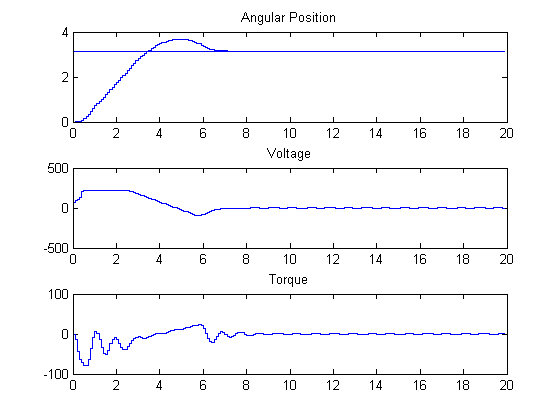
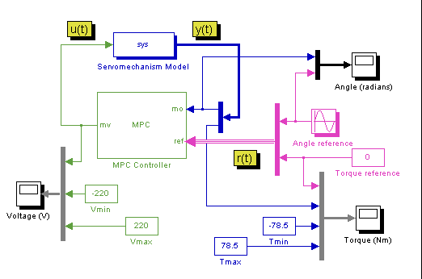
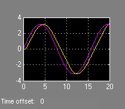
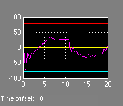
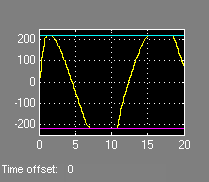

This demonstration shows how to design an MPC controller to control a DC servomechanism under voltage and shaft torque constraints [1].
Reference:
[1] A. Bemporad and E. Mosca, "Fulfilling
hard constraints in uncertain linear systems by reference managing,"
Automatica, vol. 34, no. 4, pp. 451-461, 1998.
Author: A. Bemporad
Define the parameters of the DC-servo motor [1].
mpcmotormodel
Define MPC object fields
clear ManipulatedVariables OutputVariables ManipulatedVariables=struct('Min',umin,'Max',umax,'Units','V'); OutputVariables(1)=struct('Min',-Inf,'Max',Inf,'Units','rad'); OutputVariables(2)=struct('Min',Vmin,'Max',Vmax,'Units','Nm'); Weights=struct('Input',uweight,'InputRate',duweight,'Output',yweight); clear Model Model.Plant=sys; Model.Plant.OutputGroup={1 'Measured';2 'Unmeasured'}; PredictionHorizon=10; ControlHorizon=2;
Create MPC object in workspace
ServoMPC=mpc(Model,Ts,PredictionHorizon,ControlHorizon); ServoMPC.Weights=Weights; ServoMPC.ManipulatedVariables=ManipulatedVariables; ServoMPC.OutputVariables=OutputVariables;
Simulation using SIM
disp('Now simulating nominal closed-loop behavior');
Tf=round(Tstop/Ts);
r=pi*ones(Tf,2);
[y1,t1,u1,xp1,xmpc1]=sim(ServoMPC,Tf,r);
Now simulating nominal closed-loop behavior
Plot results
subplot(311) stairs(t1,y1(:,1)); hold on stairs(t1,r(:,1)); hold off title('Angular Position') subplot(312) stairs(t1,u1); title('Voltage') subplot(313) stairs(t1,y1(:,2)); title('Torque')
Now simulate in Simulink
mpc_motor
sim('mpc_motor',Tstop)

load position
torque
s voltage
